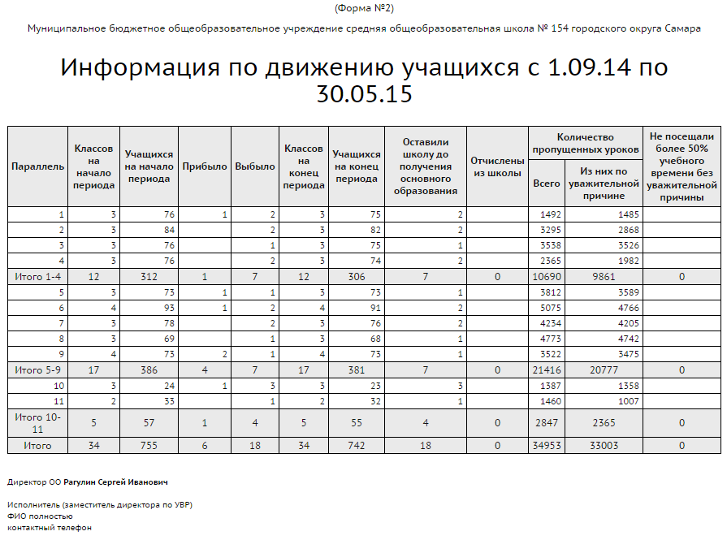

|
Информация по движению учащихся (форма №2)
|
| · | количество классов и учащихся в них на начало учебного периода и на конец учебного периода;
|
| · | количество прибывших и выбывших учащихся (с указанием в отдельных столбцах количества учащихся, отчисленных из ОО, и оставивших ОО до получения основного образования;
|
| · | итоговые данные о посещаемости (количество пропущеных уроков за учебный год).
|
